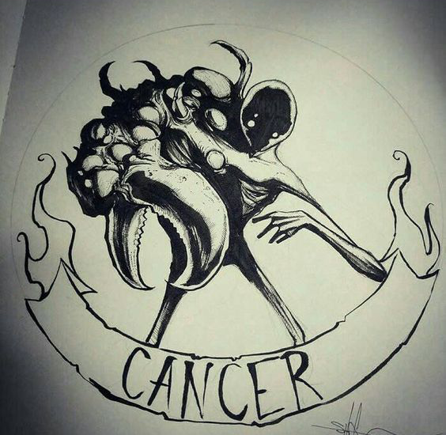
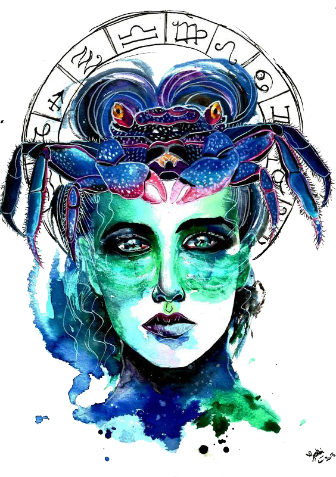

Cancer is the sign of family and children, ruler of the heart and all its matters, which you take rather seriously. While your friends are playing the field or ordering their first legal cocktails, you’re busy picking names for your future children or mentally decorating their nurseries.
 The crab symbolizes this sign for good reason. Just as the crab carries its own shell on its back, so too, does the typical cancerian…so to speak. The typical cancer person is all about home and family and is very dedicated and loyal to friends and family. Crabs often move sideways instead of moving in a straight line, and so will the person of this sign. Often, if it will avoid a fight, or achieve the goal, then moving in alternative directions to arrive at the destination is typical. They tend to grasp and hold tightly those things that make them happy, and never let go. The key characteristic of this sign is that Cancer people need to be needed. They need to know that they matter to someone and that they are secure in that love.
Cancer have an offbeat sense of humor, often finding something humorous that others don’t. They are extremely good listeners and have a heart for the problems of others. In fact, many gravitate toward this sign because they intuitively know that a Cancer will understand.